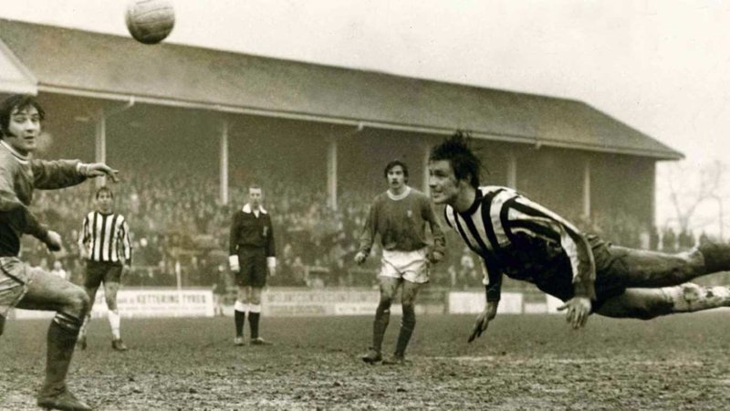

Зарождение Футбола
Еще в древние времена, человек осознал, что он может бросать и катать предметы, которые имеют боле менее округлую форму. После чего подобные действия превратились в своеобразную игру.
Игры-прародители современного футбола существовали у различных народов еще в древности. Упоминания о них можно найти в письменных источниках древних Китая, Японии, Франции, Италии. Изображения с “футбольными сюжетами” обнаружены в гробницах древнеегипетских фараонов и на древнегреческих барельефах. Подобные игры служили не только средством развлечения или физической подготовки воинов - историки отмечают языческую основу древнего футбола, где мяч символизировал солнце. Римляне называли игру "гарпастум", что означало "ручной мяч". По распространенной теории, именно благодаря римским завоевателям игра в мяч в 1 в. н. э. стала известна на Британских островах, быстро получив признание среди коренных жителей. Бритты оказались достойными учениками — в 217 н. э. в г. Дерби они впервые победили команду римских легионеров.
В 12 веке нашей эры в Англии зародилась игра с мячом, сильно похожая на футбол, в которую жители играли на лугах, дорогах и площадях. Кроме ударов по мячу ногами, также допускались и пинки кулаком. Эта ранняя форма футбола была очень грубой и жестокой, нежели современная версия игры, к тому же участвовали в ней не 22 человека, как сейчас, а целые толпы людей.
В средние века "футбол" культивировался, прежде всего, на Британских островах, в Италии и Франции. Известно, что в Англии и городские власти, и монархи не раз пытались запретить опасную забаву, порой перераставшую в кровавое побоище и наносившую немалый ущерб. (Кстати, один из таких указов стал первым письменным документом, в котором упоминалось слово “футбол”.) В средневековом английском футболе допускалась игра и ногами, и руками, число участников матча не ограничивалось, правил было совсем немного, - да и с теми особо не считались - игра представляла собой, в сущности, свалку на улицах. Британцы играли не на жизнь, а на смерть. Неудивительно, что власти вели упорную войну с футболом; выпущены были даже королевские приказы о запрещении игры. 13 апреля 1314 года жителям Лондона был зачитан королевский указ Эдуарда II, под страхом тюремного заключения запрещающий игру в городе. В 1365 настал черед Эдуарда III запретить футбол, ввиду того, что войска предпочитали эту игру совершенствованию в стрельбе из лука. Ричард II в своем запрете упомянул в 1389 и футбол, и кости, и теннис числе и в принципиальном вопросе: разрешать или нет игру руками?
В 1857 г. в Шеффилде был организован первый в мире футбольный клуб. А через шесть лет, в 1863г., на одной из встреч представителей разных школ и клубов сторонники "футбола-регби", в котором допускалась игра руками, оказались в меньшинстве и покинули собрание. Приверженцы “ножного футбола” приняли первые унифицированные правила и организовали английскую Футбольную Ассоциацию. Так произошло окончательное разделение на собственно футбол и регби, а 1863 традиционно считается годом официального рождения современного футбола.

Толчком для создания футбольных команд стала индустриализация, которая привела к появлению больших групп людей на фабриках, заводах, церквях и т.п. Зачастую, команды образовывались в больших городах, а благодаря строительству новых железных дорог, появилась возможность проводить матчи между двумя коллективами из разных городов.
Первое время в Англии преобладали клубы государственных школ, но позже, основную часть стали составлять команды, состоящие из рабочих. Уже в то время, некоторые команды платили лучшим игрокам других коллективов, чтобы те присоединились к ним.
Наконец, в 1888 году была создана Футбольная лига (The Football League), которая была высшей лигой в английском футболе до 1992 года, пока не стала Премьер-лигой.